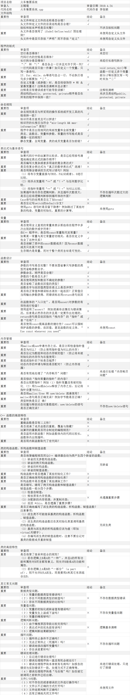

该项目是由李俊颖所编写的数据结构课程设计--火车售票系统，现代马已上传Coding.net，该项目使用C/C++语言开发。
代码审查表参考此处。

这是一年前数据结构课程设计的代码，放在现在来看，存在许多不足，但是也有不少优点，如下：
优点：
1）代码结构清晰工整有一定的风格；
2）命名符合要求；
3）表达格式基本不存在错误；
4）函数编写简单易懂；
5）注释简洁易懂；
6）基本上不存在严重问题。
问题：
1）声明与函数，函数与函数之间未进行空行，格式过于紧凑；长语句未进行拆分；
2）有的函数内一行定义多个变量；部分if后未加“{}”
3）未使用const常量取代宏常量；
4）函数内参数略复杂不好辨认；
通过本次结对作业，让我明白重要函数的注释的重要性，如果不进行必要的注释，在别人审查代码，或者自己过很长时间后再翻看代码，都不能很好的理解代码。在函数参数编写的时候，尽量从简，一行只进行一条语句，这对检查错误有很大的帮助。一定要严格要求自己代码的编写，不然会对以后的工作产生很大的影响。